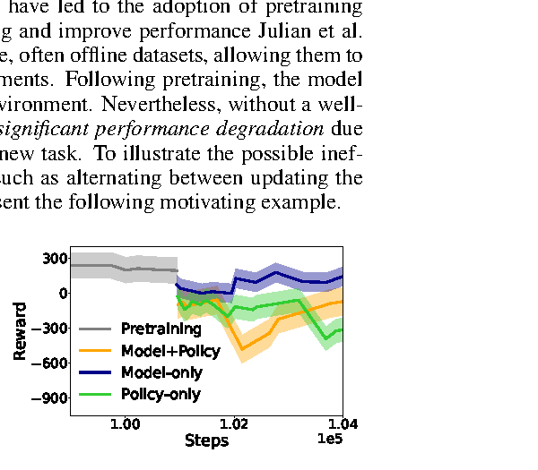
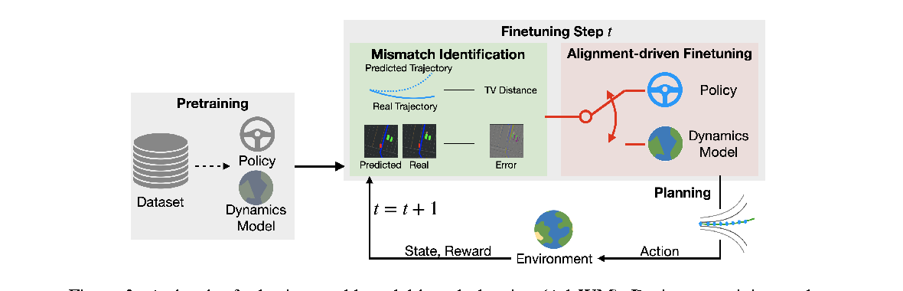
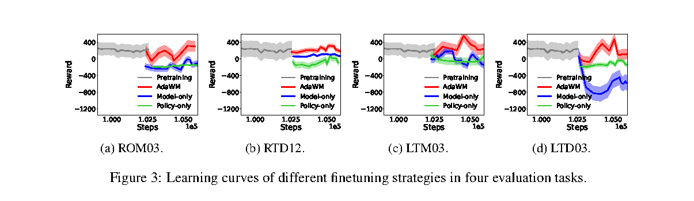
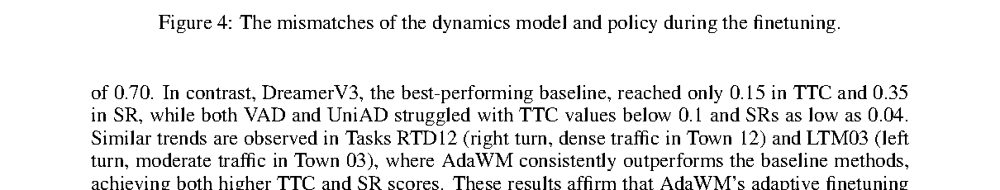

一句话总结
AdaWM 把预训练 world model + planning policy 的在线迁移问题拆成 dynamics model mismatch 和 policy mismatch， 每一步先判断谁是主要性能瓶颈，再只用轻量参数更新对应模块，从而提升 CARLA 新任务中的 SR 和 TTC。
论文要解决的问题
World model based RL 通常先学一个 latent dynamics model，再在这个模型里训练 policy。 但自动驾驶场景变化很大：从右转到左转，从中等车流到密集车流，从熟悉 Town 到新 Town，都会让预训练系统掉性能。
直觉上可以继续 finetune，但关键问题是：掉性能时，到底是 world model 对新场景预测不准，还是 policy 的动作策略不适合？ 如果盲目 model-only、policy-only 或 model+policy 交替更新，可能把另一个模块推得更不匹配。

创新点怎么理解
把性能下降拆成两个根因
作者把 performance gap 归因到 dynamics model mismatch 和 policy mismatch。 这让“该更新谁”从经验选择变成可估计的在线决策。
Mismatch identification
用 TV distance 估计当前 world model 的动态预测偏差和 policy 的动作分布偏差， 判断主要瓶颈来自“模拟器”还是“决策者”。
Alignment-driven finetuning
每一步只更新主要出问题的模块。若 dynamics mismatch 大，修 world model； 若 policy mismatch 大，修 policy。
轻量参数更新
world model 用 LoRA/NoLa 风格低秩更新，policy 只更新 sub-units 的组合权重， 避免全量微调带来的不稳定和高成本。
方法总览

pretraining:
offline dataset -> pretrained dynamics model WM_phi
-> pretrained planning policy pi_omega
online finetuning:
collect new-task samples
estimate dynamics mismatch
estimate policy mismatch
update only the dominant mismatch sideAdaWM 采用 DreamerV3 风格世界模型。观察被编码到 latent state，历史信息由 hidden state 保存：
z_t ~ q_phi(z_t | h_t, s_t)
x_t = [h_t, z_t]dynamics model 用当前 model state 和 action 想象未来：
x_{t+1} ~ WM_phi(x_{t+1} | x_t, a_t)policy 在 world model 的 latent state 上做动作选择：
a_t ~ pi_omega(a_t | x_t)理论拆解：性能为什么会掉
论文把从预训练任务迁移到新任务后的性能下降写成：
eta - eta_hat
= E_{x~rho_0}[ V^pi_{WM(P)}(x) - V^pi_{WM(P_hat)}(x) ]预测误差进一步分成两项：
epsilon_k = (x_k - x_bar_k) + (x_bar_k - x_hat_k)- x_k - x_bar_k：新任务和预训练任务之间的 distribution shift。
- x_bar_k - x_hat_k：预训练 dynamics/RNN 在原任务上的泛化误差。
Theorem 1 的上界里有两类核心误差：
dynamics model mismatch: E_max, E_P_hat
policy mismatch: E_pi这就是 AdaWM 决策规则的来源：如果性能下降主要来自 dynamics model，就修 world model；如果主要来自 policy，就修 policy。
AdaWM 具体怎么微调
每个在线 finetuning step，AdaWM 用当前 policy 与环境交互，收集新任务样本：
W = {(x, a, r)}同时保留预训练 replay buffer：
B = pretraining replay bufferStep 1：估计 dynamics mismatch
dynamics mismatch 衡量 world model 对新任务状态转移预测是否可靠：
M_model = D_TV(P | P_hat)直觉上，如果真实状态转移和 world model 预测出来的状态转移差很远，就说明“模拟器看错了世界”。
Step 2：估计 policy mismatch
policy mismatch 衡量当前 policy 和预训练 policy / 新任务需要的动作分布差异：
M_policy = D_TV(pi_t | pi_omega)如果这个距离大，说明 dynamics 可能还可以，但“决策者不会开这个新任务”。
Step 3：选择更新谁
if D_TV(P | P_hat) > C * D_TV(pi_t | pi_omega):
update dynamics model
else:
update policyC 是阈值。C 越大，越不容易触发 model update，系统越偏向 policy update； C 越小，越容易判断为 dynamics mismatch 大。
Step 4-A：更新 world model
如果 dynamics mismatch 大，AdaWM 不全量更新 world model，而是做低秩更新：
phi = (B Z)^T Phi
phi' = (B' Z)^T Phi微调时只更新 B。可以理解为：冻结大部分 world model 参数，只调整少量 low-rank adaptation weights。
Step 4-B：更新 policy
如果 policy mismatch 大，policy 也不是全量更新。论文把 policy network 写成多个 sub-units 的凸组合：
omega = sum_i delta_i * omega_i
omega = Delta^T Omega微调时只更新组合权重：
Delta -> Delta'直觉上，预训练 policy 已经学到一组驾驶技能子模块，新任务只需要重新组合这些技能。
World Model 和 Policy 怎么协同
AdaWM 里的 world model 是“脑内模拟器”，policy 是“决策者”。训练 policy 时，不是每一步都去真实环境试错，而是在 world model 里 imagination rollout：
x_t
-> policy picks a_t
-> world model predicts x_{t+1}, r_t
-> policy picks a_{t+1}
-> world model predicts x_{t+2}, r_{t+1}
-> repeat K stepspolicy 最大化 imagined return：
V^pi_WM(x_t)
= E[ sum_{i=1}^K gamma^i r(x_{t+i-1}, a_{t+i-1})
+ gamma^K Q(x_{t+K}, a_{t+K}) ]协同会出问题，是因为 policy 依赖 world model 的想象未来。如果 world model 对新任务预测错了， policy 即使在想象中学得很好，也会在真实环境里失败。反过来，如果 world model 预测准确但 policy 不会让行、减速或转弯，也会失败。
AdaWM 在线微调时不断检查到底是“模拟器错了”还是“决策者错了”，然后只修主要出问题的那一方。
实验结果
预训练任务是 Pre-RTM03：Town03 中等车流右转。主测试任务包括 roundabout、不同 Town 密集右转、左转和密集左转。
| 任务 | DreamerV3 SR | AdaWM SR | AdaWM TTC | 说明 |
|---|---|---|---|---|
| ROM03 | 0.40 | 0.82 | 2.05 | Roundabout，中等车流，同 Town |
| RTD12 | 0.32 | 0.66 | 1.25 | 右转，密集车流，新 Town |
| LTM03 | 0.28 | 0.72 | 1.32 | 左转，中等车流，同 Town |
| LTD03 | 0.35 | 0.70 | 1.92 | 左转，密集车流，最难主任务 |

策略对比与消融
| 方法 | ROM03 SR | RTD12 SR | LTM03 SR | LTD03 SR |
|---|---|---|---|---|
| No finetuning | 0.40 | 0.32 | 0.28 | 0.35 |
| Policy-only | 0.72 | 0.63 | 0.61 | 0.61 |
| Model-only | 0.60 | 0.48 | 0.68 | 0.63 |
| Model+Policy | 0.52 | 0.50 | 0.60 | 0.58 |
| AdaWM | 0.82 | 0.66 | 0.72 | 0.70 |

参数 C 的消融显示，C 太大时方法退化得更像 policy-only；C 太小时也可能次优。论文主表中 C=5 或 C=10 整体较稳， 且在 2 到 50 的范围内表现相对鲁棒。
补充场景
附录还测试了 highway cut-in、highway exit、yield to emergency vehicle、blocked intersection、 vehicle turning route pedestrian 等场景，AdaWM 仍然优于 DreamerV3。
| 任务 | DreamerV3 SR | AdaWM SR |
|---|---|---|
| HC13 | 0.33 | 0.73 |
| HE12 | 0.52 | 0.89 |
| YE12 | 0.15 | 0.52 |
| BI12 | 0.42 | 0.59 |
| VT11 | 0.58 | 0.88 |
局限与疑问
- 输入不是 raw camera：实验使用 128x128 BEV semantic segmentation，更偏 RL/planning 层 world model。
- 真实部署距离远：任务都在 CARLA/Bench2Drive 分布内，sim-to-real 与真实在线安全约束没有解决。
- TV distance 估计难：仿真中较容易拿到分布差异，真实车端如何稳定估计是难点。
- 理论假设较强：Lipschitz、TV bound、RNN generalization 等主要是设计指导，不是现实驾驶保证。
- baseline 不完全同类：VAD/UniAD 是监督学习闭环模型，论文没有对它们做同样 online finetuning。
对 AD World Model 的启发
AdaWM 最值得借鉴的是诊断视角：新场景开不好，不一定只是 policy 不会开，也可能是 world model 对新动态预测错。 自动驾驶 world model 系统应该有能力回答：
当前失败主要来自 dynamics mismatch 还是 policy mismatch？和前面读过的 LeWorldModel、Drive-OccWorld 放在一起看，脉络很清楚： LeWorldModel 关心 latent world model 如何稳定训练；Drive-OccWorld 关心未来状态用 occupancy 表达后如何规划； AdaWM 关心预训练 world model 和 policy 到新任务后如何在线适应。